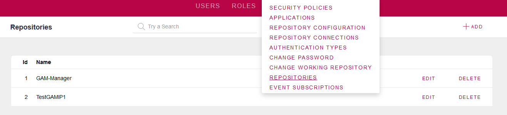
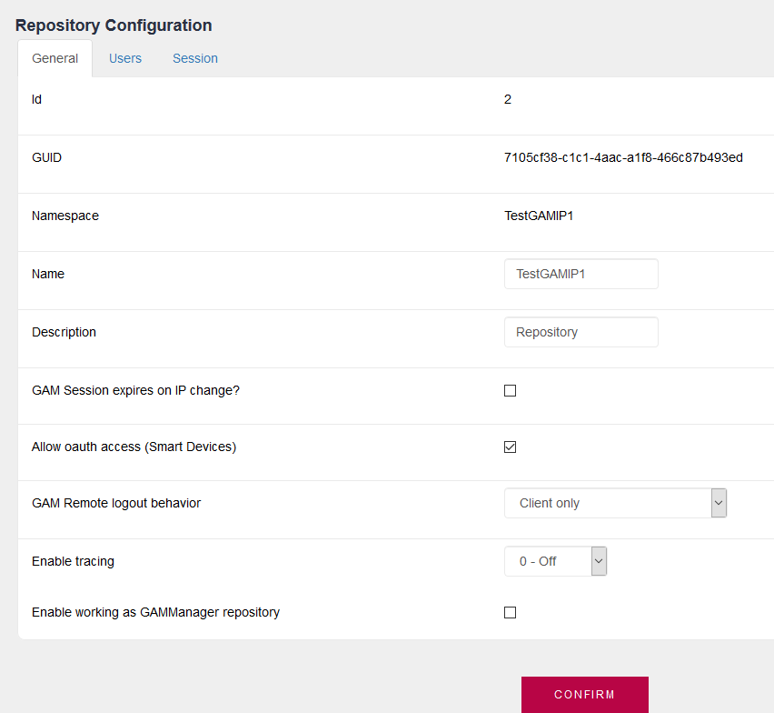

A GAM database can allocate more than one Repository. In fact, there are always at least two Repositories in a GAM database. The default administrator user of "GAM Manager Repository" (created when the GAM metadata is initialized), is "gamadmin", whose password is "gamadmin123" by default. gamadmin userThis is the default user (created in GAM metadata initialization) of the GAM Manager Repository. This user's password has to be changed when going into production. The purpose of the "gamadmin" user is to do the following tasks:
  The gamadmin user isn't allowed by default to perform other actions in the repositories (such as listing the users of the repository). So, the admin user of each reposiory is compelled to log into that repository to execute those actions. For an scenario where the gamadmin user manages several repositories (a multitenant scenario), and you need that he can perform actions as an administrator of the repository, see Howto: Managing repositories using gamadmin user. NoteAny repository can also behave as the GAM Manager although it isn't the GAM Manager. See HowTo: Managing repositories using an admin user. See AlsoHowTo: Connecting to GAM Manager Repository
|